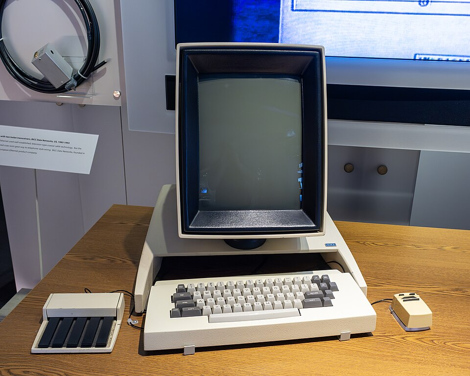
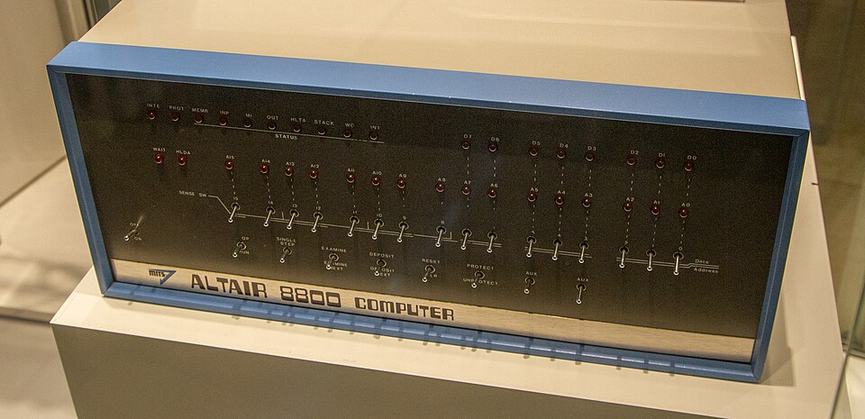
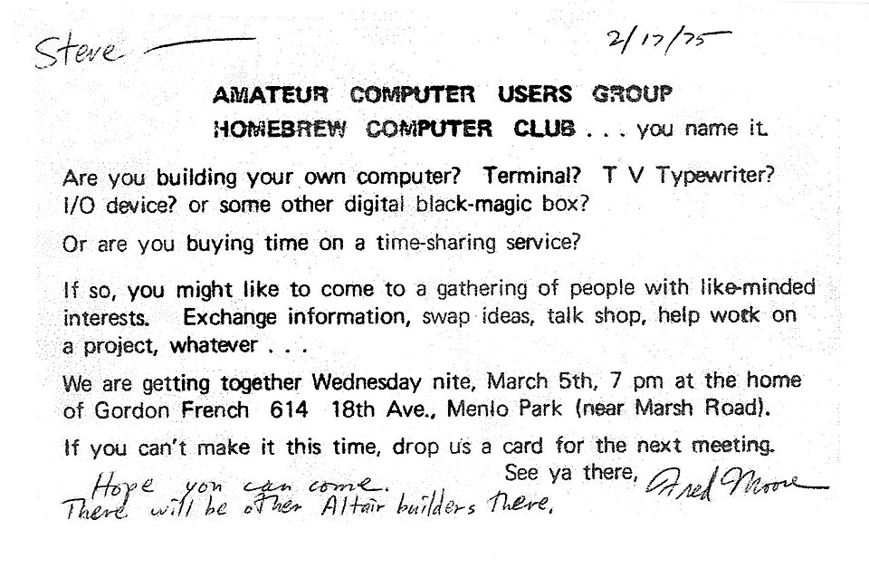
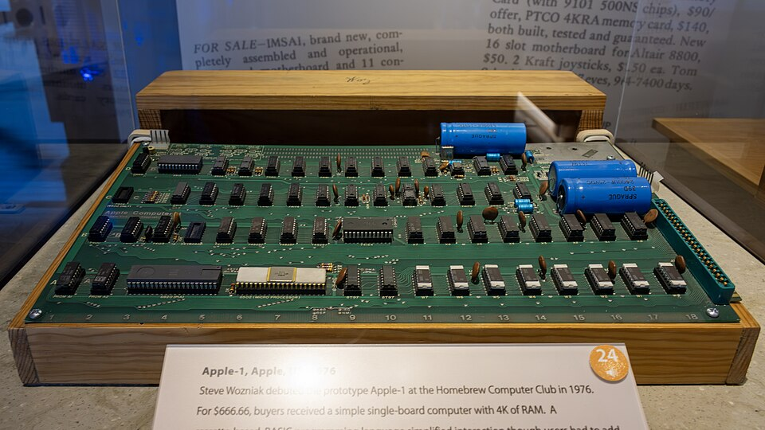
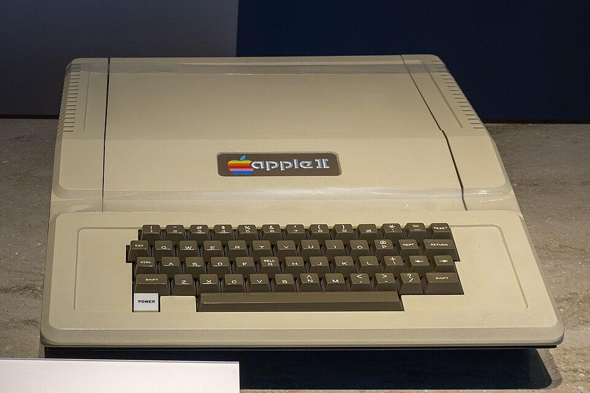
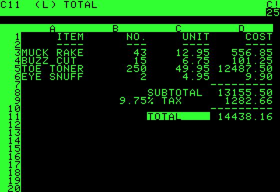
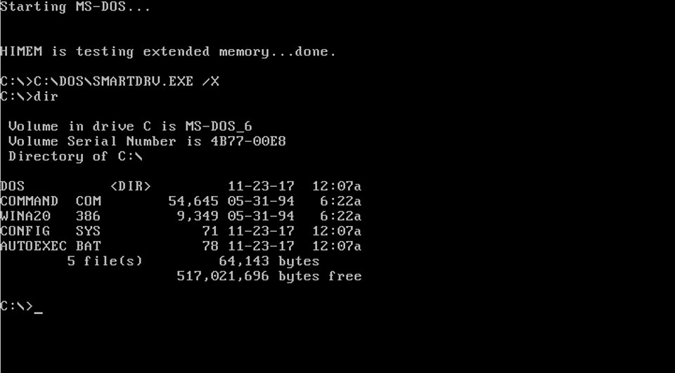
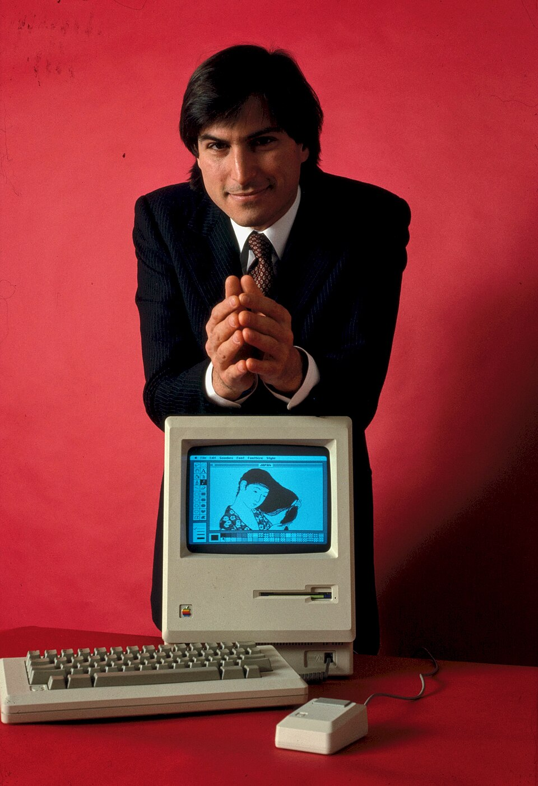
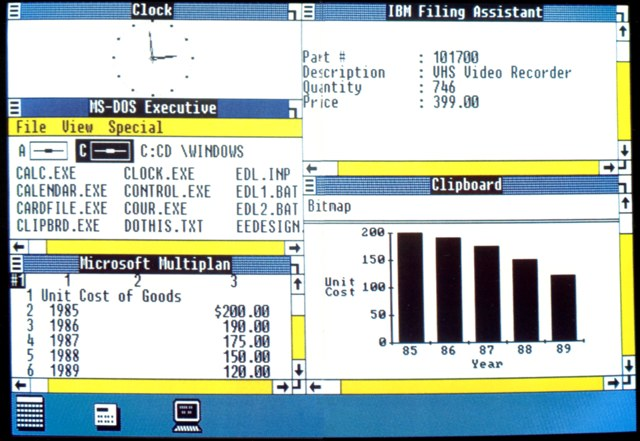
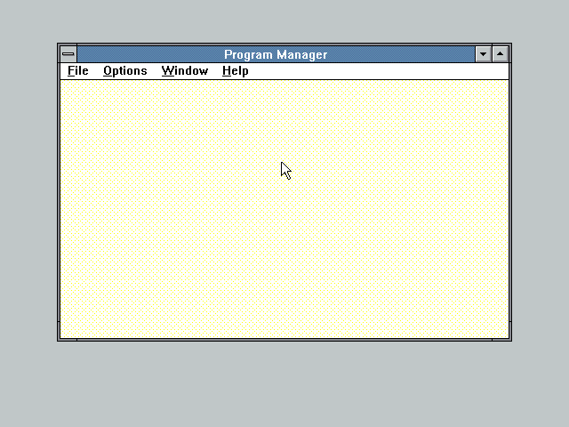

O computador chega em casa
De 1973 a 1990, em ordem. A peça que pensa está pronta e custa pouco. Este episódio segue as pessoas que a pegaram e o que cada uma construiu com ela. Quando o áudio pedir, aperte Próximo.
O fio. Um processador sozinho não é um computador: não tem memória, tela, teclado nem programa. Em cada passo daqui pra frente, ou o hardware libera um software novo, ou um software novo exige um hardware melhor. Um empurra o outro.
A tela é uma foto guardada na memória

Cada bit da memória é um ponto da tela: 606 por 808 pontos, 61 KB só pra segurar a imagem. E como não existia placa de vídeo, o próprio processador pintava o tubo 60 vezes por segundo, roubando ciclos do programa por microcódigo.
Ed Roberts e a caixa de interruptores

A MITS vendia kit de calculadora e estava quebrando. Roberts apostou tudo num computador em volta do 8080 e pôs na capa da revista. Precisava vender 200 pra empatar. Em três meses tinha 4 mil pedidos.
Gates e Allen, sem a máquina
Dá pra escrever software pra um hardware que você não tem, imitando o hardware por software. E o BASIC fez todo mundo comprar memória: o software puxou o hardware.
Wozniak, o clube e o Apple II



Wozniak fez cor na televisão sem hardware de cor, enganando o sinal de vídeo, e fez com um chip o que os outros faziam com três. Jobs vendeu. No mesmo ano saem o PET e o TRS-80: é o fim do kit.
Bricklin, Frankston e o VisiCalc
Até aqui o hardware puxava. A partir daqui o software justifica o hardware.

Jobs entra na gaveta da Xerox
Ele sai decidido a pôr aquela tela numa máquina de loja. Vai levar mais quatro anos.
O que a IBM estava fazendo

A IBM era o mainframe de milhões, vendido de terno: “ninguém é demitido por comprar IBM”. Micro era brinquedo. Bill Lowe convence a diretoria e ganha um ano; Don Estridge monta a máquina com peças de prateleira, o Intel 8088, e publica o esquema.
A mãe do Gates e o DOS
12 de agosto de 1981. Quando o hardware é igual pra todo mundo, manda quem tem o software que roda em todos.

Fazer a tela do Alto caber em 128 KB

O Lisa de 1983 custou quase 10 mil e fracassou. O Mac custou 2.495, com dois truques: Bill Atkinson pôs o QuickDraw em 64 KB de ROM, sem gastar RAM; e Burrell Smith fez o processador dividir a memória com o vídeo, a ideia do Alto num chip de prateleira.
Gates pega a interface


A Microsoft escrevia Word e Excel pro Mac e viu a interface por dentro. Gates anuncia o Windows antes do Mac sair. Jobs acusa; Gates responde que os dois tinham um vizinho rico chamado Xerox.
1990
Se já existem milhões de máquinas iguais espalhadas pelo mundo, o que falta pra elas conversarem entre si?